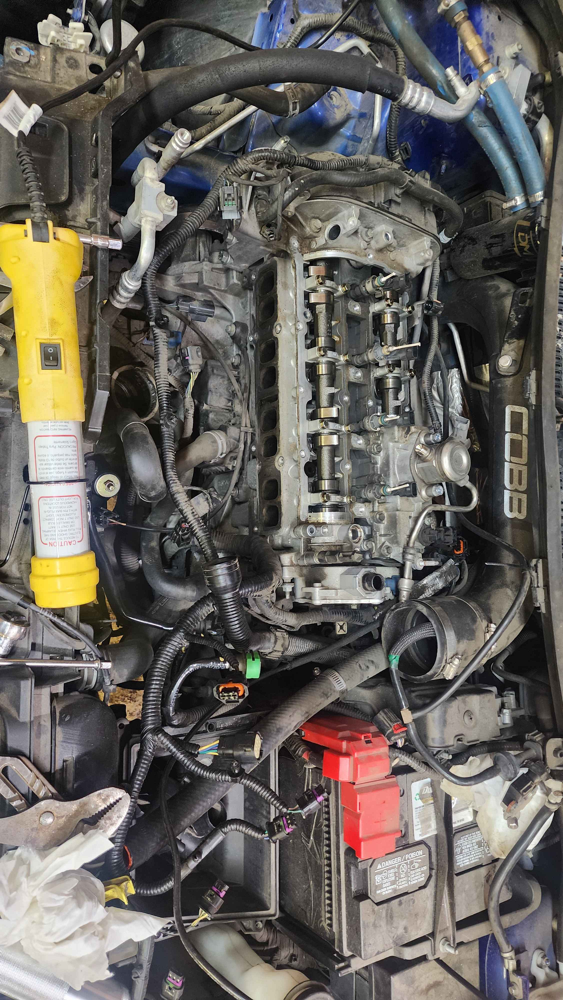
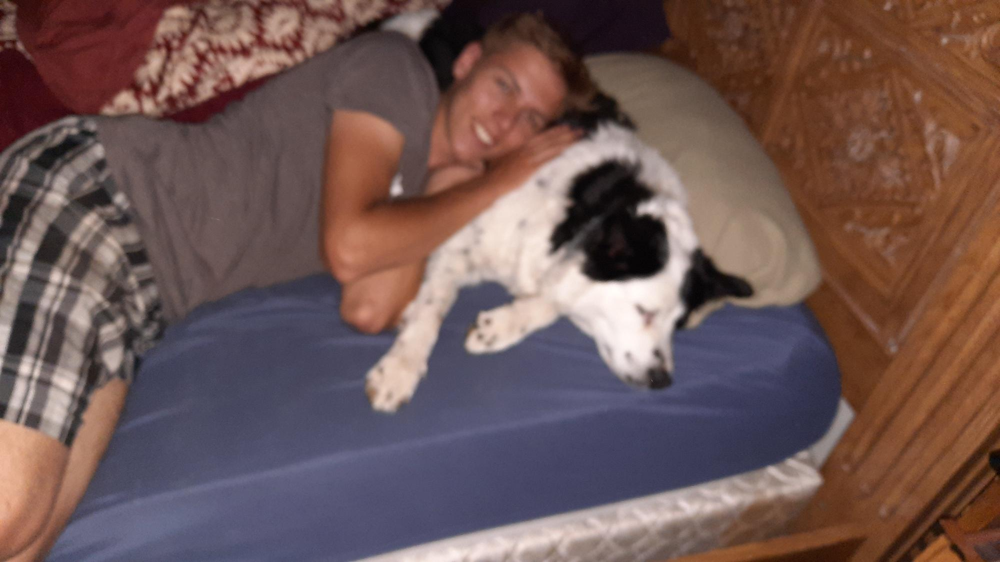

Cars and Engines

One of my biggest passions is working on cars. My Veloster N is not only fun to drive but also a constant project for learning about performance and mechanics. From detailing to upgrades, every step teaches me patience and technical skill.
Understanding engines is fascinating to me. I enjoy taking apart and rebuilding components to optimize performance. These hands-on experiences often inspire problem-solving skills I can apply in coding and technical projects.

Gaming and Tech

I love building custom PCs and setting up a workspace that inspires productivity. My gaming setup allows me to relax after coding sessions and experiment with new software. Gaming strategy and teamwork often translate into better project planning in my studies.
Spending time with my dog Scotty keeps me grounded and motivated. Whether it's going on walks or sharing downtime, he’s a big part of my daily routine and creativity boost.
Learn More About Coding
If you’re interested in learning more about coding and web development, here are some great resources to get started. These websites offer tutorials, examples, and interactive exercises to help you practice your skills.
- W3Schools – Beginner-friendly tutorials for HTML, CSS, JavaScript, and more.
- MDN Web Docs – Comprehensive guides and references for web technologies.
- freeCodeCamp – Free interactive coding lessons and projects.
Exploring these resources can help you build your own projects and improve your coding skills step by step.